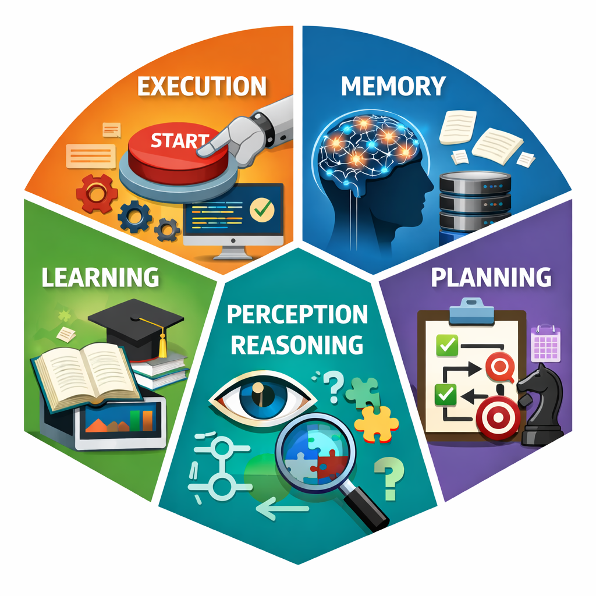
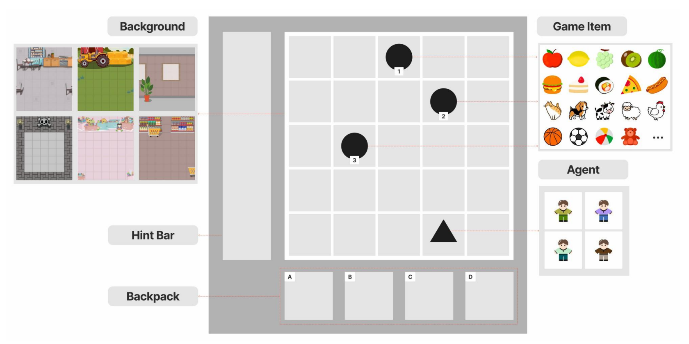
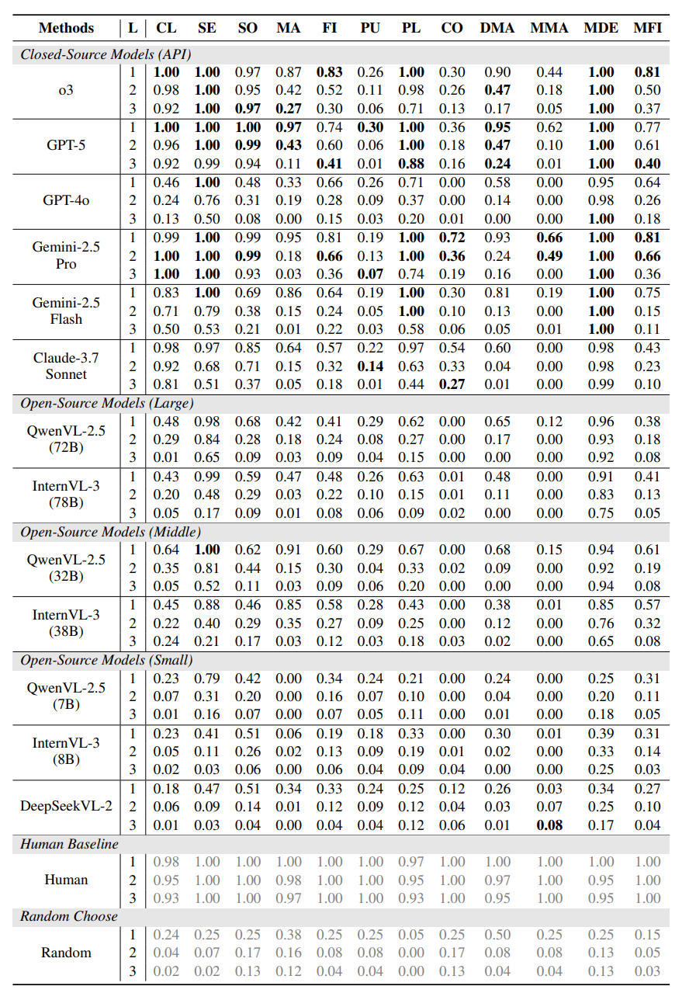
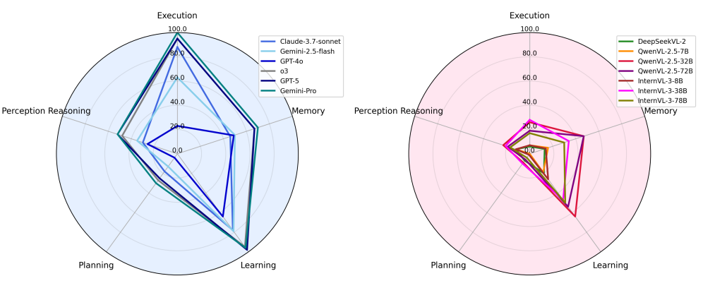

KidGym: A 2D Grid-Based Reasoning Benchmark for MLLMs
What is KidGym?
Drawing inspiration from the Wechsler Intelligence Scales, a widely recognized intelligence test for children, we define 5 essential abilities required of current MLLMs: Execution, Memory, Learning, Planning and Perception Reasoning. To this end, we introduce KidGym, a 2D grid-based benchmark for evaluating these five core capabilities.

News
- [2025.09.24] We released KidGym and open-sourced the code on GitHub.
- [2026.01.26] KidGym has been accepted as a poster at ICLR 2026. 🎉
- [2026.03.10] We have created KidGym Playground on Hugging Face for online experience.
Features

Diverse Semantic Scenes
In real-world applications, tasks of the same type often vary based on their contextual scenarios. To capture these variations, we have designed a range of environments, along with corresponding items to create immersive context-rich scenarios.
Randomness
Variability in task layouts is crucial for assessing MLLM robustness. In KidGym, each episode initializes with randomized element arrangements (e.g., item locations, agent spawn), ensuring no two rounds are identical.
Backpack and Hint Bar
Current MLLMs often struggle to maintain contextual consistency, particularly when dealing with hidden details not explicitly represented in visual information. To address this problem, we designed a backpack and a hint bar as components of the task state, enabling agents to retrieve crucial information through out the task.
Identification
Each item in KidGym's task scenes is assigned unique identifiers. These identifiers enable the MLLMs to associate visual elements with text-based descriptions. These labels not only optimize information retrieval but also reduce ambiguity in task execution, ensuring that the agent interprets and interacts with the environment accurately.
High-level Actions
MLLMs are not well-suited for executing atomic actions such as “go one step forward” or “turn left” in tasks requiring high operability. In contrast, MLLMs are better suited for handling macroscopic concepts and executing high-level actions. Building on this, each task in KidGym presents MLLMs with high-level actions. For instance, the agent can directly perform actions such as “pick up the basketball” instead of navigating step-by-step to its location and interacting with it. This reduction in operational granularity enables the model to focus on actions that are directly tied to meaningful outcomes, avoiding low-level controls.

Title
In this task, the agent is required to classify the objects in the grid into different categories based on their attributes. The agent must identify and categorize the objects correctly to complete the task.
Goal
Place {item_1} in the {color_1} basket and {item_2} in the {color_2} basket.
Action Space
- pick up the item with label {item_id}
- put the item from backpack {backpack_id} into the basket with label {basket_id}
📊 Experiments Results
We evaluated 9 state-of-the-art MLLMs on KidGym, covering both closed-source and open-source models. For each task, we ran 100 zero-shot rounds and evaluated every model on the identical set of tasks.

Performance is measured by the success rate over 100 rounds under the ground-truth optimal solution.
Through quantitative analysis, we identified 3 main challenges of current MLLMs.
- Challenges in Reasoning over Non-Semantic Visual Information.
- Challenges in Identifying the Quantity of Items.
- Challenges in Dealing with Composite Tasks.
To provide deeper insights into the capabilities of MLLMs, we calculated capability scores across 5 dimensions and visualized them through radar map for each MLLM.

As shown in the capability radar map, all evaluated MLLMs generally score lower in Perception Reasoning and Planning capabilities. While these models have progressed beyond basic recognition tasks, they still struggle with more complex forms of visual cognition, particularly abstract and non-semantic ones. Similarly, the planning dimension requires further development to enable models to systematically organize tasks, predict the consequences of actions, and implement multi-step strategies for solving complex and composite problems.
BibTeX
@misc{ye2026kidgym,
title = {Children's Intelligence Tests Pose Challenges for MLLMs? KidGym: A 2D Grid-Based Reasoning Benchmark for MLLMs},
author = {Ye, Hengwei and Guan, Yuanting and Ge, Yuxuan and Zhu, Tianying and Guan, Zhenhan and Zhong, Yijia and Zhang, Yijing and Zhang, Han and Wu, Yingna and Tian, Zheng},
booktitle = {International Conference on Learning Representations (ICLR)},
year = {2026}
}